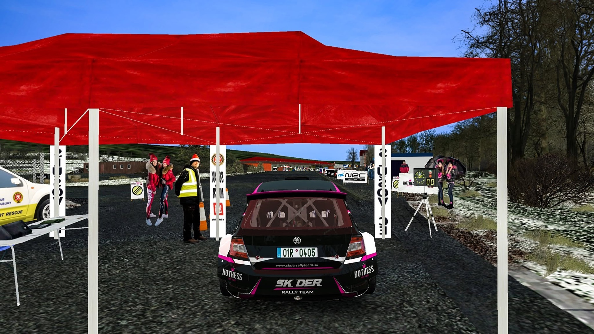
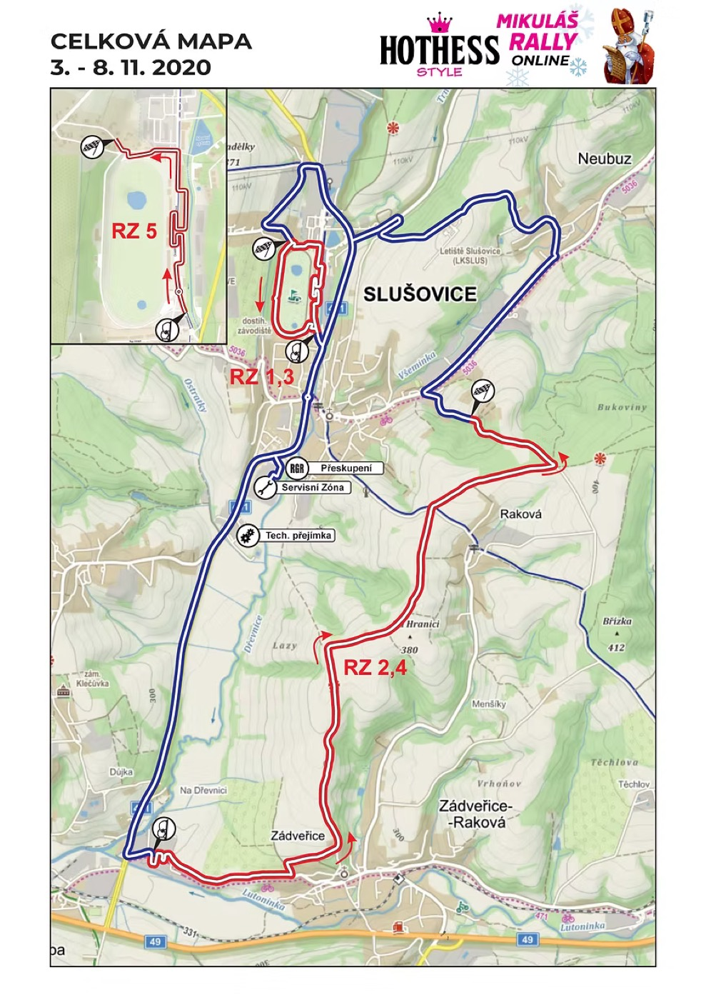

Dostihovka okruh
5,37 km
Divácky populární okruh okolo slušovického dostihového závodiště. Jede se dvakrát.
Richard Burns Rally · Slušovice
První virtuální závod na světě vytvořený ve 100% podobě oproti reálné předloze.
Pořádá NRC · generální partner HOTHESS · partner Rallyservice
Intro
Aktuální ročník
Závodí se v Richard Burns Rally na mapě věrně přenesené ze skutečné Mikuláš Rally ve Slušovicích. Stejné tratě, stejné prostředí, stejný závod, který každoročně uzavírá českou motoristickou sezonu – jen online.

Rychlostní zkoušky
5,37 km
Divácky populární okruh okolo slušovického dostihového závodiště. Jede se dvakrát.
6,69 km
Klasická rychlostní zkouška z Lípy do Slušovic. Jede se dvakrát.
1,17 km
Krátký exhibiční test na závěr, využívající opět část slušovického okruhu.

Průběh závodu
Přesné termíny budou upřesněny v zvláštním ustanovení. Změny vyhrazeny.
Dokumenty
Zvláštní ustanovení (ZU) určuje pravidla, kategorie, technické podmínky a průběh závodu. Před registrací si ho prosím pečlivě přečtěte.
Úplné znění a technické podmínky viz dokument ZU výše.
Registrace do ročníku probíhá online. Stačí vyplnit formulář a stáhnout si mapu.
Přejít na registraci →Příběh projektu
Předobrazem virtuálního podniku se stala slušovická Mikuláš Rally, která každoročně uzavírá motoristickou sezonu v Česku.
Hlavní partner jejího ročníku 2019, společnost HOTHESS s.r.o., si vzala pod křídla i její online variantu a během několika měsíců ve spolupráci s promotérskou skupinou NRC kompletně převedla do virtuální reality tehdejší podobu mikulášského závodu.
Na jezdce tak čekala hned trojice nových rychlostních zkoušek – divácky populární okruh okolo slušovického dostihového závodiště a klasická rychlostní zkouška vedoucí z Lípy do Slušovic (obě se jedou dvakrát) – a na závěr krátký exhibiční test využívající opět část slušovického okruhu.
Premiéra se uskutečnila ve dnech 3.–8. 11. 2020 jako HOTHESS Mikuláš Rally Online 2020 – kompletních 100 % podle reálné předlohy.


Archiv
Všichni vítězové a výsledky dosavadních ročníků Mikuláš Rally Online.
Video
Reportáž – HOTHESS Mikuláš Rally Online 2020
HOTHESS Mikuláš Rally Online – intro
Reálná podoba: Dostihovka (onboard Mikuláš Rally 2019, V. Kopáček)
Reálná podoba: Fagus – Lípa (onboard Mikuláš Rally 2019, V. Kopáček)